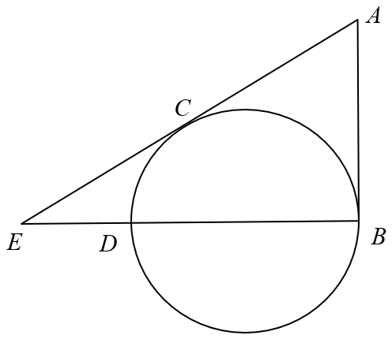

Interactive worked solution — the diagram follows the step you are reading.
| A. \(3\text{ cm}\) | B. \(5\text{ cm}\) |
| C. \(6\text{ cm}\) | D. \(8\text{ cm}\) |

Tangents from the same external point are equal, so \(AC=AB=6\text{ cm}\). Since \(A,\,C,\,E\) are collinear and \(AE=10\text{ cm}\):
\[ CE=AE-AC=10-6=4\text{ cm}. \]
Also \(OC\perp AC\),
because \(OC\) is a radius and \(AC\) is the tangent at \(C\).
\(BD\) is a diameter, so the radius \(OB\) is perpendicular to the tangent \(AB\) at \(B\). Since \(E\) lies on \(BD\) produced, \(B,\,O,\,D,\,E\) are collinear,
so \(BE\perp AB\) and
\[ \angle ABE=90^\circ . \]
In right triangle \(ABE\):
\[ BE=\sqrt{AE^{2}-AB^{2}}=\sqrt{10^{2}-6^{2}}=\sqrt{64}=8\text{ cm}. \]
Let the radius be \(r\),
so \(OB=OD=r\) and \(BD=2r\). The points lie in the order \(B,\,O,\,D,\,E\), hence
\[ OE=BE-OB=8-r. \]
Triangle \(OCE\) is right-angled at \(C\) (radius \(OC\perp\) tangent \(AC\),
and \(A,\,C,\,E\) are collinear), with \(OC=r\) and \(CE=4\).
Pythagoras in triangle \(OCE\):
\[ OC^{2}+CE^{2}=OE^{2} \]
\[ r^{2}+4^{2}=(8-r)^{2} \]
\[ r^{2}+16=64-16r+r^{2} \]
\[ 16r=48\ \Rightarrow\ r=3. \]
\[ BD=2r=2(3)=6\text{ cm}. \]
Check with the power of \(E\): \(ED=OE-OD=5-3=2\) and \(EB=8\),
so \(ED\cdot EB=16=EC^{2}=4^{2}\).
Key facts used: equal tangents from \(A\) (\(AC=AB=6\)), radius \(\perp\) tangent at the point of contact, and Pythagoras in the right triangles \(ABE\) and \(OCE\).
Question. \(AB\) and \(AC\) are tangents to a circle of radius \(12\text{ cm}\) at \(B\) and \(C\) respectively. If \(AB=5\text{ cm}\), find (a) \(OA\),
(b) the length of the chord \(BC\).